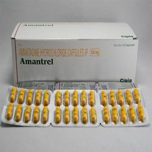

Amantadine ( Symmetrel )

Amantadine ဆိုတာဘာလဲ
Amantadine ဆိုတာ ခန္ဓာကိုယ်အတွင်းရှိ ဗိုင်းရပ်စ်များ၏ ကြီးထွားမှုကိုရပ်စေသော ဗိုင်းရပ်စ်သတ်ဆေးတစ်မျိုး ဖြစ်ပါသည်။
ဆေးကို ဘယ်နေရာတွေမှာ သုံးလဲ
တုပ်ကွေးရောဂါများအား ကာကွယ်ခြင်းနှင့် ကုသခြင်းတို့ မှာသုံးလေ့ရှိပါတယ်။ ထို့အပြင် Parkinson’s ရောဂါနှင့် အချို့သော ဆေးများ/ဓာတုဗေဒပစ္စည်းများ၏ ဘေးထွက်ဆိုးကျိုးကြောင့်ဖြစ်သော ရောဂါများ (ဥပမာ ဆေးကြောင့်ဖြစ်သော အာရုံကြောရောဂါ) တွင်ကိုယ်လက် လှုပ်ရှားမှုကို ကောင်းမွန်တိုးတက်စေသောကြောင့် Amantadine ကိုသုံးလေ့ရှိပါတယ်။
ဆေးရဲ့ဆိုးကျိုးဘာတွေရှိလဲ
- အမြင်ဝေဝါးခြင်း၊ ပျို့အန်၊ အစာမကြေခြင်း၊ မူးဝေခြင်း၊ အာခေါင်ခြောက်ခြင်း၊ ဝမ်းချုပ်ခြင်း၊ ဂနာမငြိမ်ဖြစ်ခြင်း နှင့် အိပ်မပျော်ခြင်းတို့ကိုဖြစ်စေနိုင်ပါသည်။
- အရေပြားတွင်နီပြာရောင် အဖုများပေါက်ခြင်း၊ ခြေကျင်းဝတ်များရောင်လာခြင်း၊ ဆီးသွားရခက်ခြင်း နှင့်အမြင်ဝေဝါးခြင်းတို့ဖြစ်ပါက နီးစပ်ရာဆေးခန်းသို့အမြန်ဆုံးသွားပြပါ။
- ဆေးမတည့်ခြင်းဖြစ်နိုင်သော်လည်းရှားပါတယ်။ကြုံတောင့်ကြုံခဲပြင်းထန်သော ရောဂါလက္ခဏာတွေကတော့ အသက်ရှူကြပ်ခြင်း၊ စိတ်ခံစားမှုပြောင်းလဲခြင်း (ဥပမာ စိတ်ကျခြင်း၊ သတ်သေချင်စိတ်များ ပေါ်ပေါက်လာခြင်း)၊ ကြွက်သားများတောင့်တင်းမှု၊ မူမမှန်ကြွက်သားလှုပ်ရှားမှု၊မူမမှန်ချွေးထွက်ခြင်း၊ နှလုံးခုန်မြန်ခြင်း နှင့်တက်ခြင်းတို့ဖြစ်ကာ အမြန်ဆုံးဆေးကုသမှုခံယူသင့်ပါတယ်။
- Amantadine သည် ရုတ်တရက် အိပ်ငိုက်ခြင်းဖြစ်နိုင်သောကြောင့် ဆေးသောက်ပြီး ကားမောင်းခြင်းမပြုလုပ်သင့်ပါ။
ဆေးသောက်လျှင် ဘာတွေ သတိထားရမလဲ
- ဆေးမတည့်ခြင်း၊ မျက်စိရောဂါများ၊ ခြေ/လက်ရောင်ခြင်း၊ နှလုံးရောဂါ၊ သွေးပေါင်တက်/ကျ၊ ကျောက်ကပ်ရောဂါ၊ အသည်းရောဂါ၊ စိတ်ရောဂါများ၊ အတက်ရောဂါ၊ အရေပြားရောဂါ များရှိ/မရှိ ဆရာဝန်ကို ကြိုပြောသင့်ပါတယ်။
- ရုတ်တရက် အိပ်ငိုက်ခြင်းဖြစ်နိုင်သောကြောင့် ဆေးသောက်ပြီးကားမမောင်းသင့်ပါ။
- အရက်သောက်သူများလည်း ဆေးသောက်နေပါက အရက်လျှော့သောက်သင့်ပါသည်။
- Parkinson’s ရောဂါ အတွက် Amantadine သောက်နေရပါက လေ့ကျင့်ခန်းအား အလွန်အကြူး မလုပ်သင့်ပါ။
- ကိုယ်ဝန်ဆောင်သည်များနှင့် နို့တိုက်မိခင်များသည် ဆရာဝန်နှင့်တိုင်ပင်ပြီးမှ သောက်သုံးသင့်ပါသည်။
ဆေးအာနိသင် ဘယ်လိုရှိလဲ
- Anticholinergic ဆေးများ (ဥပမာ Atropine) ၊ Antihistamines များ ( ဥပမာ diphenhydramine) ၊ စိတ်ရောဂါအတွက်ဆေးများ (Phenothiazine ဥပမာ Thioridazine)၊ Quinidine၊ Quinine ၊ စိတ်လှုံ့ဆော်ဆေးများ ( ဥပမာ Caffeine) ၊ Trimethoprim/ Sulfamethoxazole အစရှိသော ဆေးများနှင့် တွဲသောက်လျှင် ဆေးအာနိသင် ပြောင်းကာ ဘေးဖြစ်နိုင်ပါသည်။
- ဆရာဝန်နှင့် ဦးစွာတိုင်ပင်ပြီးမှ သောက်သင့်ပါတယ်။
ဆေးသောက်လွန်လျှင် ဘာဖြစ်နိုင်လဲ
- နှလုံးခုန်မြန်/မူမမှန်ခြင်း၊ အလွန်အမင်းမူးဝေခြင်း၊ အသက်ရှူကြပ်ခြင်း၊ ဆီးပမာဏပြောင်းလဲခြင်း၊ စိတ်ခံစားမှုပြောင်းလဲခြင်း (ဥပမာ– စိုးရိမ်လွန်ခြင်း၊ စိတ်ကျခြင်း၊ တွေဝေခြင်း၊ ထင်ယောင် ထင်မှားဖြစ်ခြင်း)၊ တက်ခြင်းတို့ဖြစ်ကာ အန္တရာယ်ရှိသဖြင့် အမြန်ဆုံးဆေးကုသမှုခံယူသင့်ပါတယ်။
- သတိပြုရန်မှာ Parkinson’s ရောဂါအတွက် Amantadine သောက်သုံးနေရသူများမှာ အရေပြားကင်ဆာ (Melanoma) ဖြစ်နိုင်ချေများသောကြောင့် မှဲ့ပုံစံနှင့် အရွယ်အစားပြောင်းလာခြင်း၊ အရေပြားတွင် မူမမှန်ပြောင်းလဲခြင်းတို့ဖြစ်ပါက ဆရာဝန်အား အမြန်ဆုံးအကြောင်းကြား တိုင်ပင်သင့်ပါသည်။
Source– ဒေါက်တာအိမ့်ချယ်ရီ